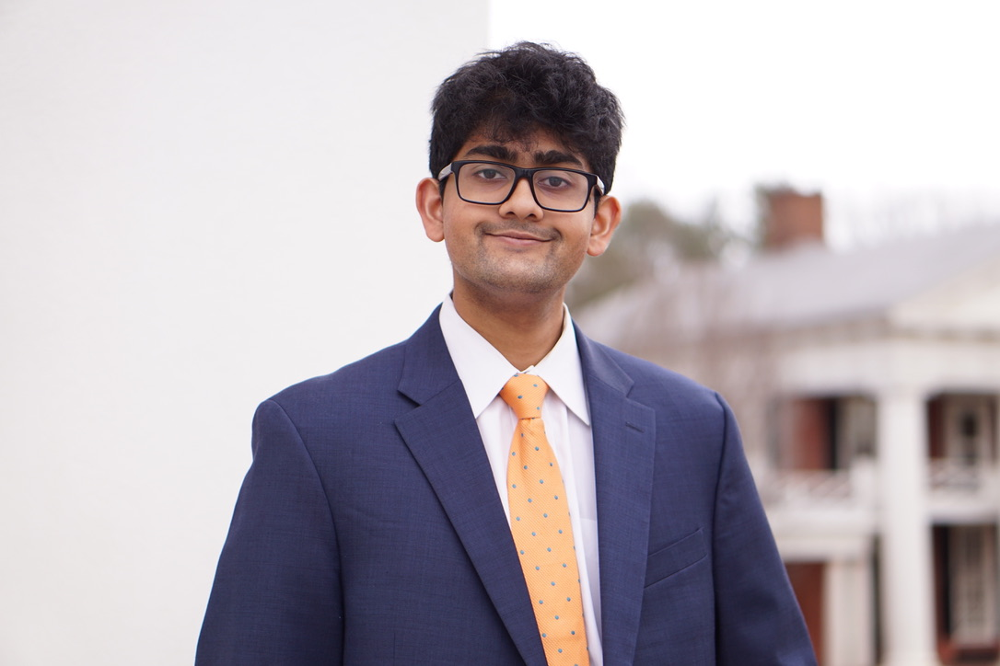
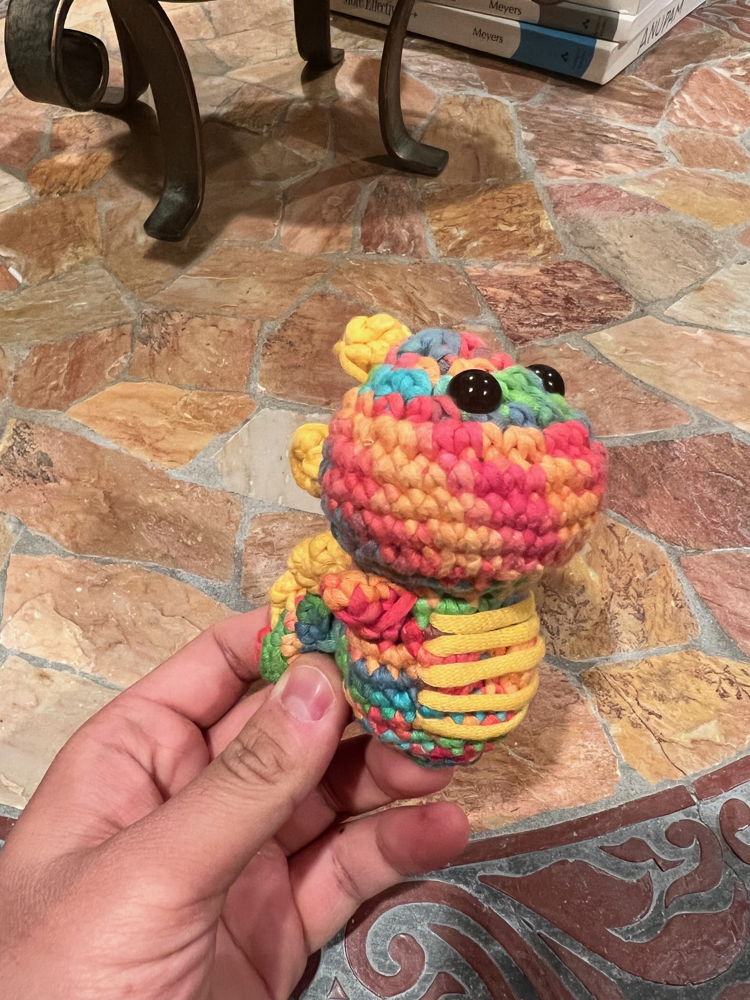
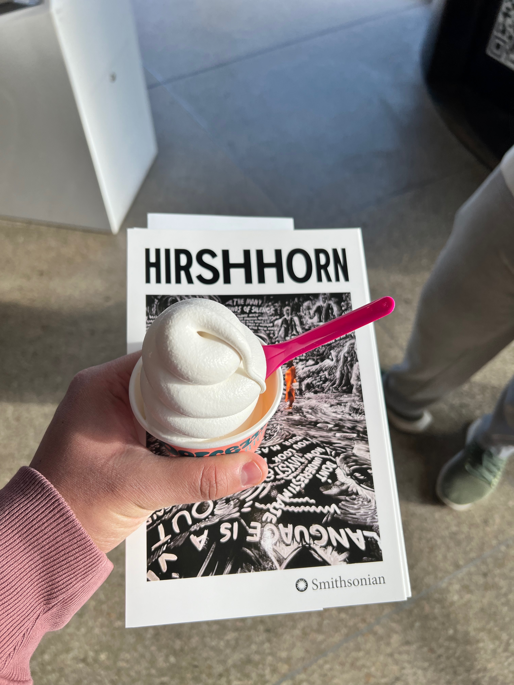
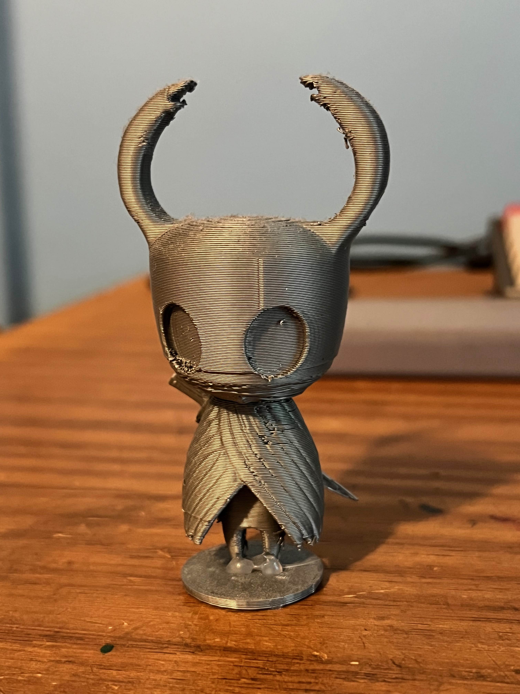
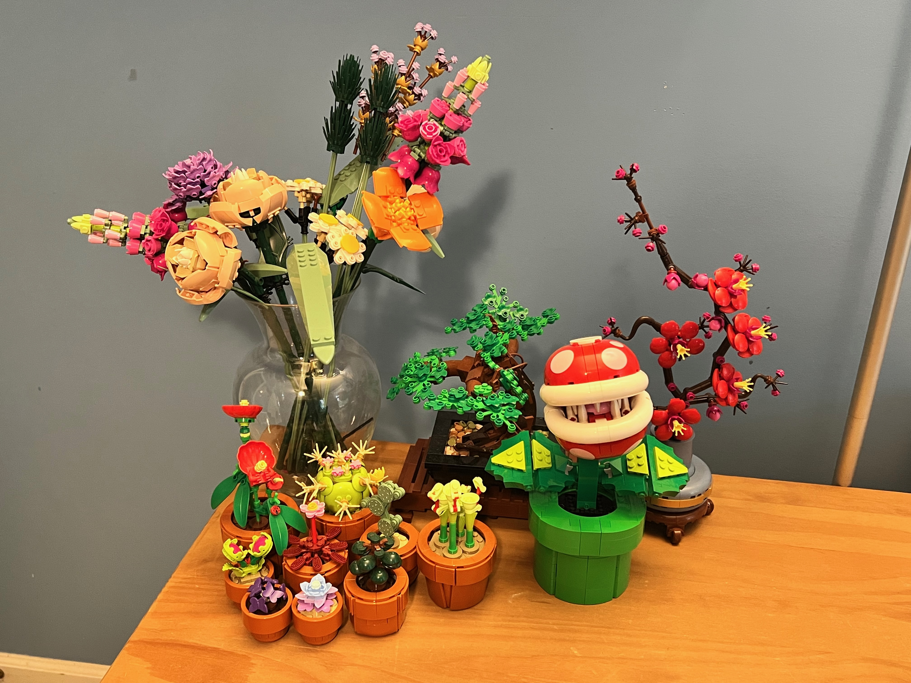
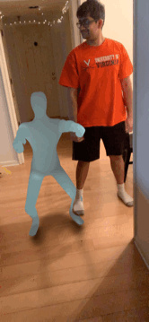

Hi! I'm Rohan Chandra. Thanks for visiting my website!
I'm 26 years old, and am currently a Fullstack Machine Learning Engineer for Bana Solutions,
I have a BS in Computer Engineering with a Business Minor
from the University of Virginia (May, 2022). I'm currently pursuing a Master's of Science
in Robotics and Autonomous Systems from Johns Hopkins University (December, 2026).
Download my Resume
here
Or click the dropdown to see it
Outside of work, I love to do the following things:






I built a RAG Powered AI Agent to synthesize articles on USDA.gov into a single source. Users could then send natural language queries to the chatbot and recieve natural language responses back. Placed in the top 10 finalists among 50+ teams scattered across the East Coast.
Led the creation and development of RobotGo, an 8 week FTC (First Tech Challenge) software bootcamp to give interested students
introductory knowledge in core robotics concepts (object recognition, sensor fusion,
obstacle avoidance, odometry, teleoperation and autonomous movement). Video lectures were produced as well, and can be seen on the
Nova Labs Robotics YouTube channel.
As a result, students have advanced to the state championships the past two seasons,
and regularly volunteer to help rookie teams develop their own software skills.
Built TrueForm as a submission to the HooHacks 2022 Hackathon competition. TrueForm analyzes real-time video of users performing exercises to spot and highlight potential injury-causing form mistakes.
Created Virtual Fitness Trainer, an echoAR-powered augemented reality fitness app that guides users in performing complex exercises like squats by providing them a human-like avatar that they can follow. Achieved a finalist position in our category (Health and Wellness). Won the "echoAR - Best Use of echoAR" award, and was invited to participate in the Microsoft Garage program.

Designed a controlled protocol for evaluating motion control, heading estimation, and object ranging on a low-cost
inspection rover, and ran a pilot of the motion experiments that completed all 17 trials with no failures.
Checking against independent physical measurements caught errors the robot's own sensors hid, like a 0.15 m/s
command actually running at about 0.27 m/s, and an apparent 69° turn that was really about 430°.
Download Paper (PDF)
Recreated the DDPG algorithm and matched the original paper's results on two of three MuJoCo environments, then ran
an ablation study confirming that target networks and the experience replay buffer are both necessary.
The study also found that a larger soft-update rate (τ) than the original authors used improves performance,
while the replay buffer's size has little effect.
Download Paper (PDF)
Built a deep learning model that hides a full-color image inside another, extending Baluja's encoder-decoder with a
multi-branch architecture trained in L*a*b* color space. It hides 17.6 bits per pixel with near-invisible changes
(43.6 dB PSNR), while steganalysis classifiers detect it no better than chance, and these results hold across
image resolutions and datasets.
Download Paper (PDF)